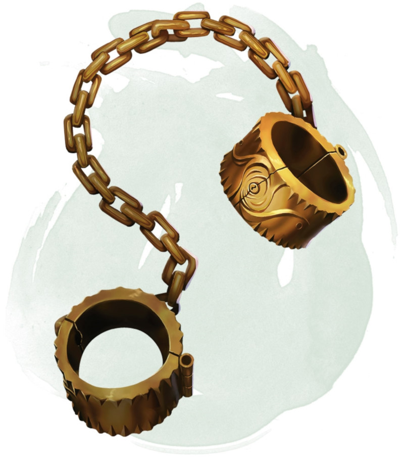

Menottes dimensionnelles
Objet merveilleux, rare
Vous pouvez utiliser votre action pour mettre ses menottes à une créature incapable d'agir. Les menottes s'ajustent pour convenir à des créatures de taille P, M ou G. En plus de servir de menottes banales, les menottes empêchent la créature qu'elles attachent d'utiliser tout moyen de déplacement extradimensionnel, ce qui inclut la téléportation ou le voyage vers d'autres plans d'existence. Elles n'empêchent pas la créature de passer au travers d'un portail interdimensionnel.
Vous, et toutes les créatures que vous désignez lorsque vous utilisez les chaînes, pouvez utiliser une action pour les enlever. Une fois tous les 30 jours, une créature attachée peut effectuer un jet de Force (Athlétisme) DD 30. En cas de réussite au jet, la créature brise les menottes et se libère. Les menottes sont détruites.
Vous, et toutes les créatures que vous désignez lorsque vous utilisez les chaînes, pouvez utiliser une action pour les enlever. Une fois tous les 30 jours, une créature attachée peut effectuer un jet de Force (Athlétisme) DD 30. En cas de réussite au jet, la créature brise les menottes et se libère. Les menottes sont détruites.
Dungeon Master´s Guide (SRD)
